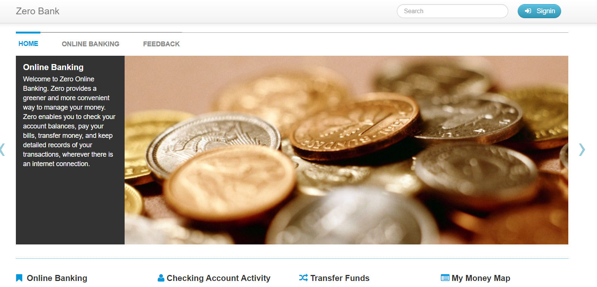

Zero Bank: Automatización de Pruebas con Cypress
Este proyecto consiste en la automatización de pruebas de la aplicación web de Zero Bank utilizando Cypress, una herramienta de prueba end-to-end (E2E) que permite realizar pruebas funcionales de aplicaciones web de manera sencilla y efectiva.
El código incluye una suite de pruebas que verifica la funcionalidad de la página de inicio de Zero Bank y simula una transferencia de fondos entre cuentas.
.png)
- Validación de la Página de Inicio: Se comprueba que el logo y el título "Online Banking" sean visibles en la página de inicio.
- Prueba de Transferencia de Fondos: Se realiza el siguiente flujo:
- Acceso al sistema mediante el ingreso de un nombre de usuario y contraseña.
- Selección de la opción de transferencia de fondos.
- Llenado del formulario con datos de la transferencia, como el monto y la descripción.
- Envío del formulario y verificación del mensaje de éxito que confirma la transferencia.
.png)
Esta prueba se enfoca en verificar la correcta visualización de los elementos gráficos en la aplicación web de Zero Bank. A continuación se detalla el flujo de la prueba:
- Acceso a la Página de Inicio: La prueba inicia navegando a la URL de la aplicación.
- Inicio de Sesión: Se simula el inicio de sesión mediante la interacción con el botón correspondiente y la introducción de credenciales de usuario.
- Navegación a la Sección de Gráficos: Luego de iniciar sesión, se accede a la pestaña que muestra los gráficos de la cuenta.
- Verificación de Elementos Gráficos: Se comprueba que el primer gráfico sea visible en la pantalla.
- Interacción con Elementos Gráficos: Se realiza un clic en otro elemento gráfico para activar una acción.
- Validación de la Ocultación de Elementos: Finalmente, se verifica que el primer gráfico ya no sea visible, lo que indica que la interacción ha tenido el efecto esperado.